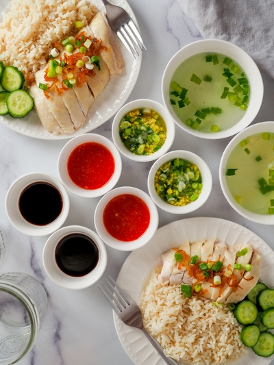

Hainanese Chicken Rice
Yield: 6 servings
Prep time: 15 minutes
Cook time: 75 minutes
Total time: 90 minutes
Hainanese Chicken Rice, a dish that is very dear to my heart and one that I feel represents my heritage. My grandpa from my mom’s side is from Hainan. He emigrated from Hainan to Malaysia when he was very young. My grandfather worked in the food business for most of his life. He has worked at Hainanese western cafes, one that is actually still open till today. Check out the Coliseum Cafe if you are ever in Kuala Lumpur, they’ve been in business since 1921. He spent his latter years running a Hainanese Chicken Rice stall with my grandma until he retired. I was very fortunate to have spent most of my teenage years living with my grandpa and he would make this dish at home sometimes. I tried to replicate his hainanese chicken rice recipe.
What makes Hainanese chicken rice special?
I think Hainanese chicken rice is special because of the abundance of fragrant flavors that you experience while eating this dish and how fresh everything tastes. From the perfectly poached silky and moist chicken to the fragrant rice that gets its aroma from pandan leaves, shallot oil, ginger, chicken fat, and chicken stock from the poached chicken. It is served with fresh sliced cucumbers, a tangy red chili garlic sauce, finely minced ginger and scallion oil, and dark soy sauce. I love adding all the sauces to a bite of chicken and rice with lots of shallots and dipping the cucumbers in the red chili garlic sauce.
How to make the chicken juicy and moist with the poaching method?
I have a few tips to ensure that the chicken is super juicy and moist. Firstly, the chicken should be patted dry and brushed with oil. I used my shallot oil recipe which you can find here and brushed the entire chicken making sure it is nicely covered and seasoned generously with salt. Then, you will need a large enough pot to submerge the entire chicken in and the water needs to be boiling when you put the chicken in. Let it come to a rapid boil and immediately turn the heat down to the lowest setting to poach the chicken. Once it finishes cooking, it needs to be placed in an ice water bath to shock the chicken skin and stop the cooking process.
Ingredients
-
For the Poached Chicken
- 1 4-lb whole chicken
- 1 tbsp homemade shallot oil or olive oil
- 3 stalks of green onions
- 1 knob of ginger
- 3 tsp of salt
- 2 cups of rice (rinsed and drained)
- 1 bunch of pandan leaves
- 1 knob of ginger (sliced)
- 1 tbsp shallot oil
- 1 piece of chicken skin (cut from bottom cavity of chicken)
- 4 knobs of ginger (finely minced)
- 2 stalks of green onions
- 1 tsp salt
- 2 tbsp olive oil (heated)
- 7-8 red fresno chilies
- 6 cloves of garlic
- 2-3 tbsp white sugar (to taste)
- 1 knob of ginger
- 1 tsp salt
- 1 lime (juiced)
- 1/2 cup of water
- 2 tbsp dark soy sauce (for serving)
- 4 mini cucumbers (sliced)
For the Rice
For the Ginger and Green Onion Oil
For the Chili Sauce
For Serving

Directions
Cut 1 bulb of shallot into thin slices.
Cook shallot with 1/4 cup of olive until golden brown.
Take the shallots out and set aside.
Reserve the shallot oil for cooking and serving.
Bring a large pot of water to boil. The pot should be big enough to submerge the entire chicken.
Remove the interior pouch of giblets from the chicken cavity and pat dry the chicken.
Cut a little bit of the chicken skin from the bottom cavity and set aside for the rice later.
Brush the entire chicken with shallot oil or olive oil and season the chicken with 3 tsp of salt.
Once the water is rapidly boiling, carefully submerge the chicken into the water and lift it up.
Repeat this motion a couple of times. (This is to ensure even cooking on the chicken).
Submerge the entire chicken into the pot of water.
Add more water if the chicken is not entirely covered and bring the water back to a rapid boil if you had to add more.
Turn the heat to the lowest setting and cover the pot with a lid. Allow the chicken to poach for 45-50 minutes or until the internal temperature reaches 165°.
Prepare a large ice bath. Once the chicken has reached an internal temperature of 165°, submerge the chicken into the ice bath.
Allow the chicken to rest in the ice bath for 10 minutes and then carefully grab it by the inner neck area to let it dry for a few minutes. Move it to a cutting board.
Apply a liberal layer of shallot oil or sesame oil onto the chicken skin and sprinkle 1 tsp of salt all over the chicken.
The chicken is ready to be carved.
While the chicken is poaching, using a medium pot, heat up 1 tbsp of shallot oil.
Add the chicken skin and allow it to cook with the sliced ginger. Stir fry until fragrant.
Add the 2 cups of rinsed and drained jasmine rice and continue to stir fry until fragrant.
Put the pandan leaves in and add 2-1/4 cups of water. Let it come to a rapid boil and cover the pot with a lid.
Turn the heat setting to low and let it cook for 30-40 minutes until it is soft and fluffy.
Finely mince the ginger and slice the green onions.
Mix the ginger and green onion together with 1 tsp of salt in a bowl.
Heat up 2 tbsp of olive oil and pour it onto the ginger and green onion mixture.
In a food processor, puree 7-8 red chilies, 6 cloves of garlic, 1 knob of ginger, 1/2 cup of water, the juice of 1 lime, and 1 tsp of salt together.
Then, add the sugar 1 tbsp at a time while tasting until you achieve a tangy balance.
Lay a bed of rice on a plate and top with the sliced poached chicken.
Garnish with fried shallots and sliced green onions. Add sliced cucumbers.
Serve each sauce separately on the side.